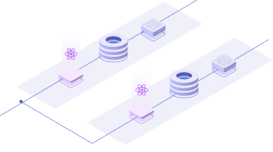

Deploy real world applications
Qovery Engine empowers you to deploy complex applications, such as a backend, a frontend, and a database in a very simple way.
Servers, networking, security, all is done by the Engine for you.
See more

Resilience is key
Qovery Engine knows when something goes wrong on the deployment of your applications. Qovery Engine is built with resiliency in mind.
A transactional engine inspired by what is provided into ACID databases has been developed at the heart of the product to rollback on a consistent and working application version when something goes wrong.
See more